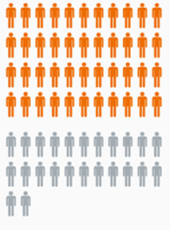
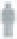
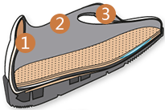
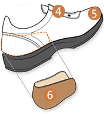
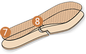
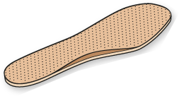
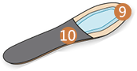
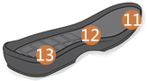
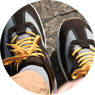
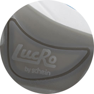

预防糖尿病足
临床证据
在海因里希杜杜塞尔多夫海涅大学进行的临床研究结果的证据表明合适的糖尿病鞋可以预防足部溃疡和炎症的复发。在这项研究中，观察了92个高危糖尿病患者和足部溃疡患者愈合后42个月内足部溃疡复发的情况。有些患者穿正常鞋而另一部分则穿Lucro经典糖尿病鞋。
结果表明，患者穿戴Lucro鞋后在第一年的溃疡复发率减少80%。
综合研究

92名高风险糖尿病患者
60名患者使用LUCRO经典糖尿病鞋

32名患者使用普通鞋
平均年龄
63岁
平均患糖尿病时间
13年
观察期长达
42个月
使用情况所有92名患者都分配一双经典LucRo 糖尿病鞋，其中有60名患者使用占到 总人数的2/3，有32名并未使用
符合人体工学
|






|
1.符合人体解剖学的后帮设计
2.一体化设计的透气纤维衬
3.减压，围绕着力点的柔性材料设计
4.超宽的鞋舌,方便穿戴
5.鞋头的柔性设计，为脚趾提供额外的保护
6.加长的后帮设计，稳定并纠正的脚后跟位置
7减震，三层柔性材料组成的鞋垫
8针对前后脚的不同行走特点采用不同强度的材料
9.LUCRO经典.轻巧.运动系列中采用硬质鞋垫
10 神垫中心加固
11.通过鞋跟与前掌的联合受力，控制鞋底形变
12.LUCRO鞋底的压力分布均匀
13 LUCRO以大数据为基础研发不同的鞋底
|
缓解风湿骨痛

对于糖尿病患者来说，运动不仅仅有益于身体健康，还可以降低血糖水平。而患有风湿病的人可以通过常规运动来阻止或者减缓关节磨损。
同时，运动还能使你的情绪往一个健康的方向发展，从而提高整体的生活质量。运动不一定要在健身房或者运动俱乐部进行。它可以使一次森林远足，可以是一段长距离的散步，也可以是一次到乡村的集体旅行。而我们的LucRo运动系列就是为此而来的！

LucRo运动系列采用全新的耐候性材料，拥有坚固的鞋底。使您在日常休闲运动或散步于砾石小径或远足于郊外都能释放双脚的压力。